2月19日，记者在三门峡市城乡一体化示范区了解到，春节假期三门峡黄河廊道全线火爆，仅前往大王镇后地村赏天鹅、游枣林、观黄河、品美食的游客就达6．5万余人次。
3月15日上午11时许，随着重达6800吨的主跨300米拱肋整体提升完成，标志着齐鲁黄河大桥主桥420米跨拱肋顺利合龙，也标志着世界最大下承式网状系杆拱桥主跨合龙。
山东把产业扶贫作为黄河滩区脱贫攻坚的主攻方向，因地制宜发展特色优势产业，通过发展产业带动贫困群众增收脱贫。
这是黄河孟津会盟段河道内古墓群出土的陶仕女俑。这是黄河孟津会盟段河道内古墓群出土的陶马。这是黄河孟津会盟段河道内古墓群出土的陶马。
2月21日，记者从洛阳市文物考古研究院获悉，在清理黄河孟津会盟段河道内古代墓葬群过程中，发掘出土十余件西汉时期彩绘陶仕女俑。截至目前，共发掘清理空心砖墓39座、小砖墓18座，出土各类文物200余件。
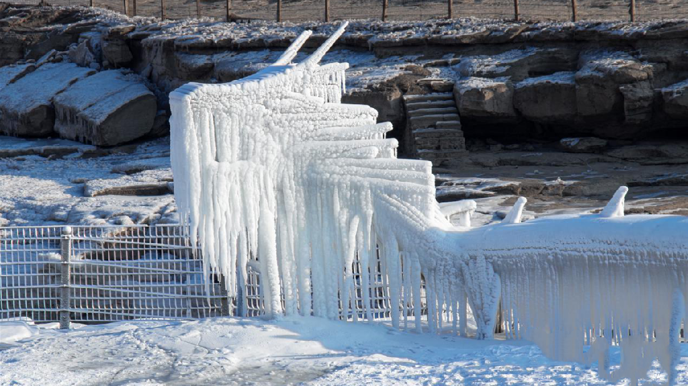
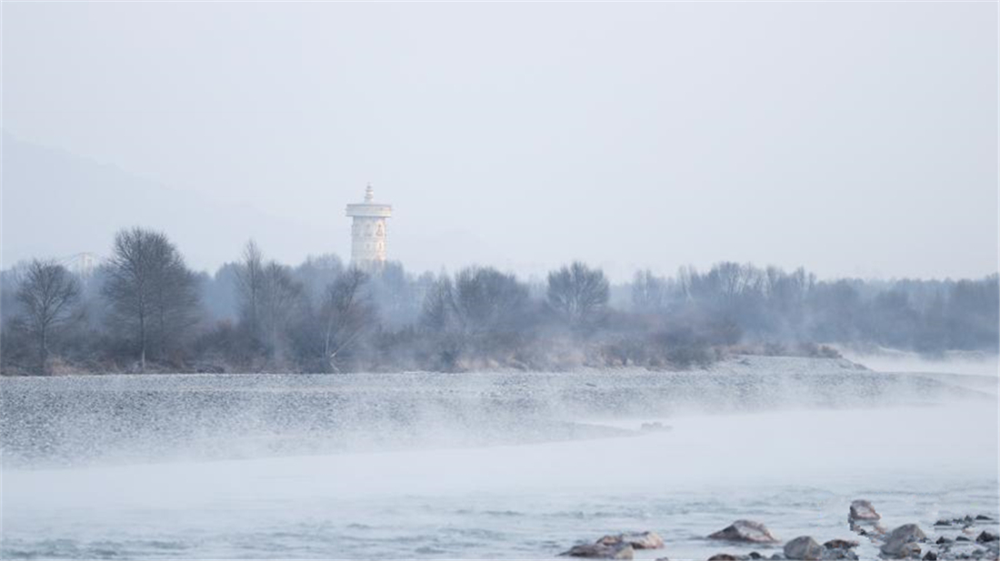
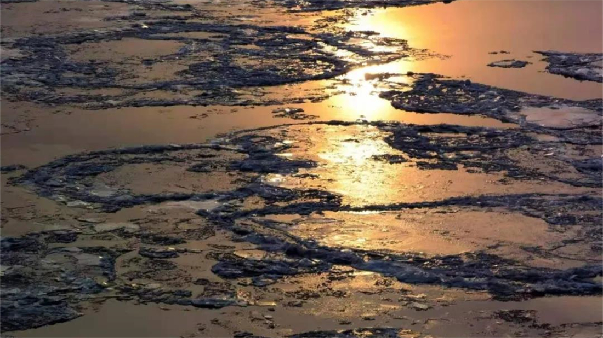
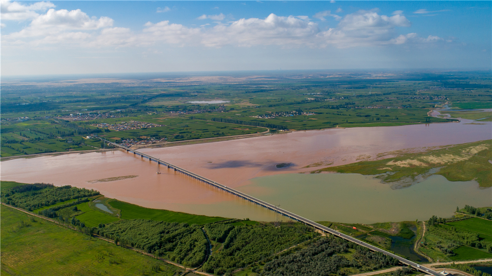
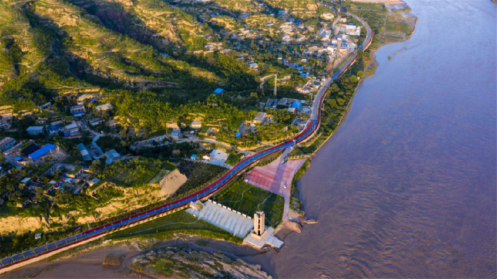
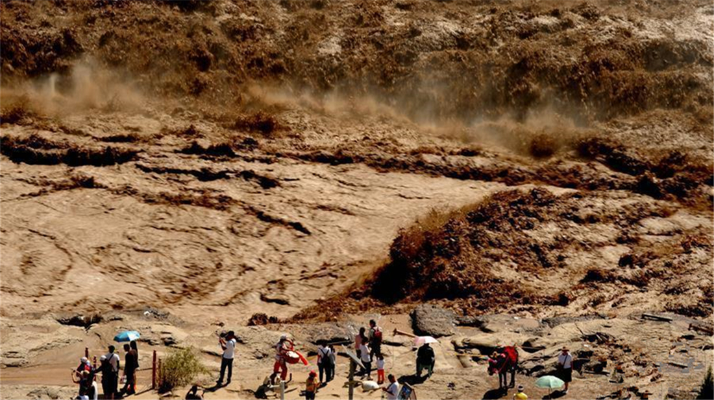
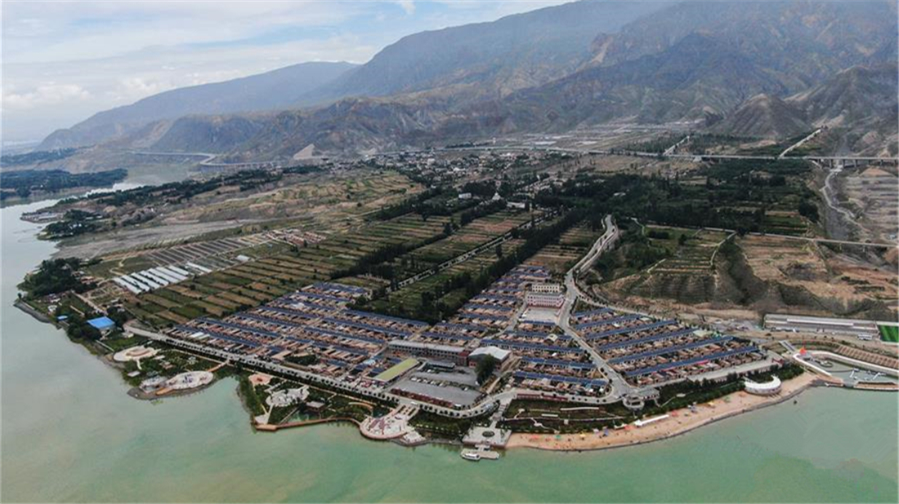
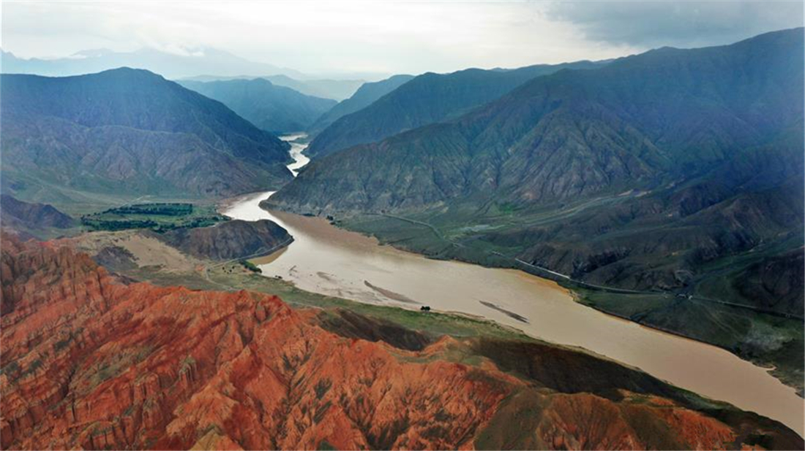
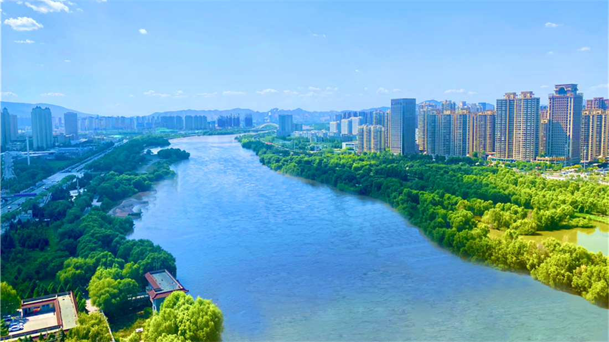
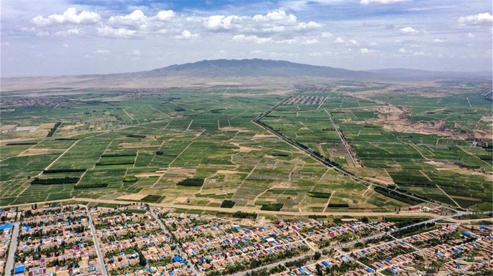
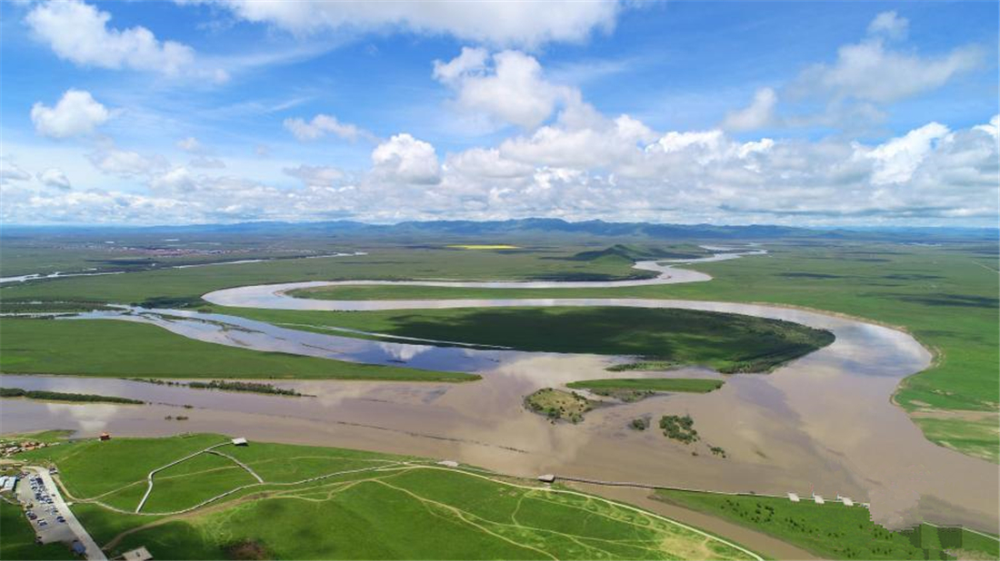
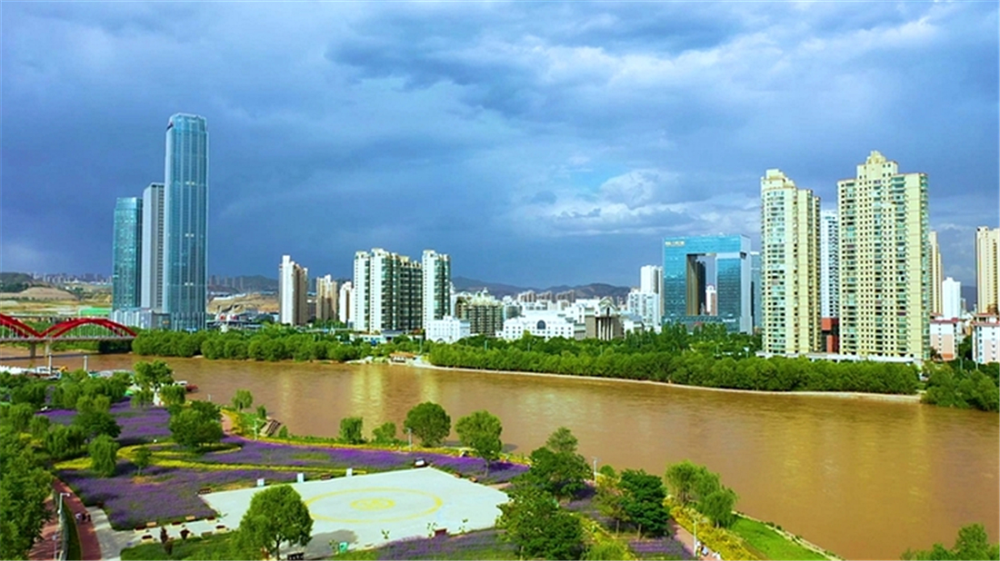
1988年7月开工建设的陕甘宁盐环定扬黄工程，李识海再次担任总工程师，直到1990年退休。
厚重的文化底蕴、鲜明的农耕文明特色、旖旎的黄河风光成为运城的天然禀赋，运城如何开发利用这些资源，实践黄河流域生态保护和高质量发展。
李白《将进酒》曰：黄河之水天上来，奔流到海不复回。这句诗，一言黄河水的发源地之高，二说黄河水最终流向了大海。